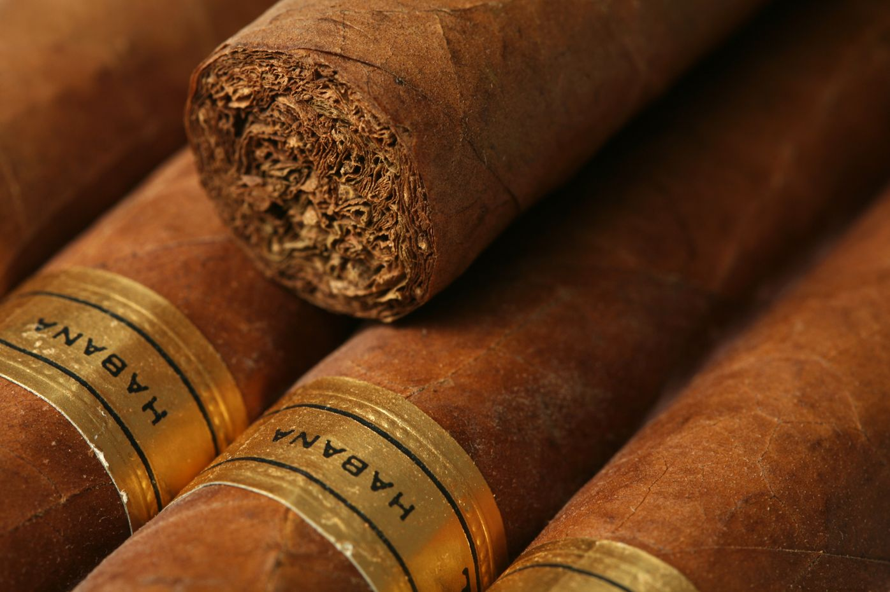

We have gained an excellent reputation in the tobacco market. Why? Because
we are responsible for what we do.

FROM SEED TO CIGAR
Our modern and well-equipped cigar factories in Cuba do not rely solely on
technologies. On the contrary, the making of cigars still requires human
skills. Our employees are engaged in a craft and are supported by modern
technologies.

QUALITY THAT CAN'T BE OVERESTIMATED
Before a wrapper is wound around a cigar, it passes through at least three
hundred pairs of hands. You can trace the journey of your cigar from the
tobacco leaf or even seed to the boxed cigar. We use the most modern
approaches and only natural ingredients.